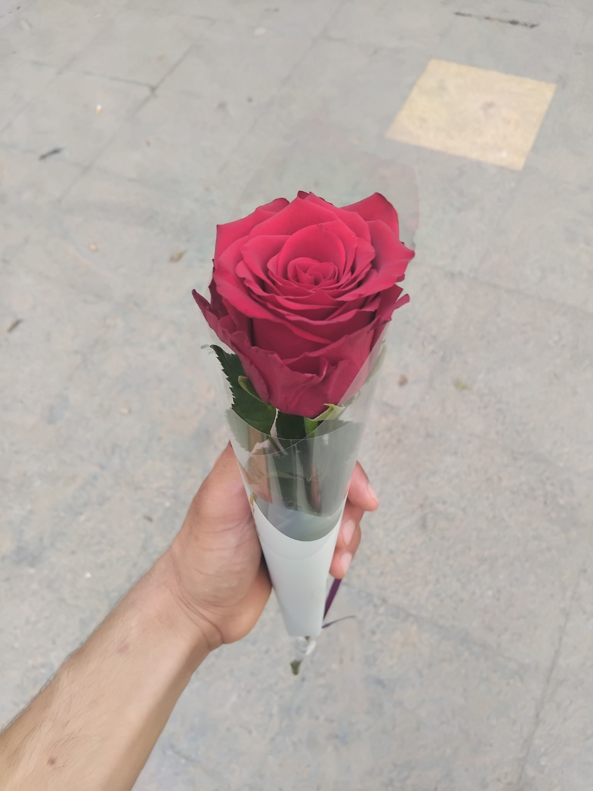

بعض الهدايا لا تُقاس بحجمها، بل بما تحمله من معنى.
أتمنى أن يحمل لكِ عامكِ الجديد أياماً أهدأ، وضحكات أكثر، وأحلاماً تجد طريقها إليكِ واحداً تلو الآخر.
أعرف أنكِ تحبين القراءة، لذلك أردت أن تكون هديتكِ حكاية؛ صفحاتٌ تجمع بعض اللحظات التي مرّت، والأشياء الصغيرة التي جعلت الأيام أكثر لطفاً.
وحبيت نفكّرك برك، خاصة إذا راكي تجوزي وقت صعيب: ما تنسايش شحال فيك من صفات جميلة، وشحال تقدري تخلّي أثراً طيباً في حياة الناس.
— من شخص يتمنى لكِ الخير دائماً 🌿
THE WAY I SEE YOU
كما أراكِ
صفات جميلة تستحق أن تُقال، لا أن تبقى في الذاكرة فقط.
طيبة القلبإنسانة طيبة، وكان لطفكِ حاضراً في أوقات كثيرة.
قارئة محبة للمعرفةتجدين في الكتب عوالم جديدة، وفي الحكايات مساحة للتأمل.
مشجّعةتعرفين كيف تدفعين من حولكِ إلى مواصلة ما بدأوه.
ترسمين الابتسامةلديكِ طريقة لطيفة تجعلين بها اللحظات أخف.
شاكرة ولا تنسين الخيرتقدّرين التفاصيل الصغيرة، ولا يضيع منكِ أثر المعروف.
قوية ومسؤولةفيكِ قوة هادئة، وأنوثة لطيفة، وقدرة على تحمّل المسؤولية.
فصيحة وموهوبةكلماتكِ وصوتكِ ومواهبكِ أشياء لها حضورها الخاص.
محبة للفن والحكاياتمن الأفلام والمسلسلات إلى القراءة، تعرفين كيف تستمتعين بالتفاصيل.
تهتمين بالتفاصيلتلاحظين أشياء قد تمرّ على غيركِ دون انتباه.
جمالكِ في حضوركِابتسامتكِ وعيناكِ وتفاصيلكِ الجميلة جزء من الصورة التي أتذكرها.
THE STORY
ميرا — حكاية تستحق أن تُقرأ
اقرئي على مهل… فبعض الحكايات أجمل حين لا نستعجلها.
الجزء الأول · البدايات وما بعدها01 / 60
01 / 60
أيام بلا ألوان
لم يكن أحمد يكره حياته، لكنه لم يكن يعرف كيف يستمتع بها أيضاً. كانت الأيام تتشابه؛ محاضرات، ووجوه عابرة، ومحادثات تبدأ سريعاً ثم تنتهي قبل أن تترك أثراً. في الإقامة الجامعية، خلال فترة امتحانات الاستدراك، كان الوقت أطول مما ينبغي.

وردة واحدة… وذكرى بقيت.
ميرا · حكاية من ستين صفحة
02 / 60
وقت طويل
كان يحمل هاتفه معظم الوقت. يتصفح الأخبار، ينتقل بين المجموعات، أو يبحث عن شيء يملأ فراغاً لا يعرف اسمه. لم يكن ينتظر حدثاً عظيماً؛ كان يريد فقط أن تمر الأيام بأقل قدر من الثقل.
ميرا · حكاية من ستين صفحة
03 / 60
اسم في مجموعة
في يوم عادي ظهر اسم فتاة في مجموعة على Messenger. لم تكن هناك موسيقى تصويرية ولا لحظة يتوقف فيها الزمن. كانت فتاة تشارك الآخرين الحديث بعفوية، وتبدو مرحة، وتحب الغناء.
ميرا · حكاية من ستين صفحة
04 / 60
رسالة مهذبة
تحدث معها قليلاً داخل المجموعة، ثم غادرت. لم يفكر في الأمر كثيراً، لكنه أرسل إليها رسالة خاصة يطلب منها العودة إلى المجموعة. كانت رسالة بسيطة لا تحمل توقعات كبيرة، ثم أغلق الهاتف وعاد إلى يومه.
ميرا · حكاية من ستين صفحة
05 / 60
إشعار في الصباح
في اليوم التالي وجد إشعاراً جديداً. كانت ميرا. شكرته على رسالته وسألته عن حاله. قرأ الكلمات وأجابها، وبدأ الحديث بأسئلة بسيطة انتقلت بعدها المحادثة إلى مواضيع أخرى.
ميرا · حكاية من ستين صفحة
06 / 60
حكايات قديمة
تحدثا عن الحياة، ثم عن الحب. أخبرته ميرا أنها لا تريد الدخول في علاقة جديدة بعد تجربة سابقة جعلتها مترددة. استمع إليها دون أن يحاول إقناعها بعكس ما تشعر به.
ميرا · حكاية من ستين صفحة
07 / 60
فراغ تركه الغياب
حكى لها أحمد بدوره عن فتاة أحبته ثم غادرت حياته قبل نحو عامين. كانت لكل منهما قصة مختلفة، لكنهما عرفا معنى أن يترك شخص ما فراغاً خلفه. لم تكن المحادثة اعترافاً بالحب؛ كانت بداية صداقة.
ميرا · حكاية من ستين صفحة
08 / 60
بدايات هادئة
أحياناً تكون البدايات الحقيقية هادئة إلى درجة أننا لا نلاحظ أهميتها إلا بعد سنوات. لم يكن أي منهما يعرف أن تلك الرسائل الصغيرة ستصبح لاحقاً جزءاً من ذاكرته.
ميرا · حكاية من ستين صفحة
09 / 60
عالم الأفلام
اكتشف أحمد سريعاً أن ميرا تحب الأفلام والمسلسلات. كانت تستطيع أن تتحدث بحماس عن مسلسل طويل، تشرح الأحداث والشخصيات، وتخبره عن الحلقة التي شاهدتها وما أعجبها أو أغضبها.
ميرا · حكاية من ستين صفحة
10 / 60
عالم الألعاب
أما أحمد فكان من عالم آخر. أحب ألعاب الفيديو، ولم تكن بالنسبة إليه مجرد وسيلة لتمضية الوقت؛ كانت قصصاً يعيش تفاصيلها، وشخصيات يتذكرها، وعوالم يستطيع قضاء ساعات في استكشافها.
ميرا · حكاية من ستين صفحة
11 / 60
نافذة صغيرة
كان يبدأ حديثه عن The Last of Us، ثم ينتقل إلى Red Dead Redemption أو Resident Evil. لم تكن ميرا تعرف كل التفاصيل، لكنها كانت تعرف متى يتحمس، ومتى يريد أن يحكي عن شخصية أثرت فيه.
ميرا · حكاية من ستين صفحة
12 / 60
الإنصات المتبادل
في المقابل، كان يستمع إلى حكاياتها عن المسلسلات. ربما نسي اسم العمل أو بعض الشخصيات، لكنه يعود ليسألها عما حدث في الحلقة التالية. لم يكن الأمر متعلقاً بالألعاب أو المسلسلات بقدر ما كان متعلقاً برغبة كل منهما في مشاركة ما يحب.
ميرا · حكاية من ستين صفحة
13 / 60
اختلاف جميل
كان أحمد يحب Attack on Titan، بينما كانت ميرا تعشق One Piece. عالم العمالقة والأسوار عنده، وعالم القراصنة والبحار عندها. لم يحتج أي منهما إلى إقناع الآخر بأن ذوقه هو الأفضل؛ كان الاختلاف جزءاً من المتعة.
ميرا · حكاية من ستين صفحة
14 / 60
أحاديث لا تنتهي
شيئاً فشيئاً، لم تعد المحادثات مقتصرة على وقت الفراغ. صارت تمتد خلال اليوم كله تقريباً. كان أحمد يشاركها ما حدث في الجامعة، وما يعمل عليه، وما يلعبه، والفكرة التي خطرت له.
ميرا · حكاية من ستين صفحة
15 / 60
تفاصيلها أيضاً
وكانت هي تشاركه أغانيها وأخبارها وما تشاهده وما تتعلمه. لم يكن عليه أن ينتظر حدثاً استثنائياً حتى يخبرها، فقد أصبحت حتى التفاصيل العادية قابلة للمشاركة.
ميرا · حكاية من ستين صفحة
16 / 60
صباح الخير
كانت هناك محادثات تبدأ في الصباح ولا تنتهي إلا في وقت متأخر من الليل. وأحياناً يمتد السهر حتى الثالثة صباحاً. ينتقلان من موضوع إلى آخر دون أن يشعر أحدهما بضرورة إنهاء الحديث.
ميرا · حكاية من ستين صفحة
17 / 60
مكان في اليوم
بدأ أحمد يلاحظ أن الهاتف لم يعد مجرد شاشة يتابع الأخبار أو يلعب من خلالها. أصبح هناك شخص قد يسأله عن يومه، أو يرسل له أغنية، أو يحكي له عن حلقة شاهدها.
ميرا · حكاية من ستين صفحة
18 / 60
تشجيع هادئ
كانت ميرا تتابع أعماله ومشاريعه وتشجعه على مواصلة ما بدأه. لم تكن تحتاج إلى كلمات كبيرة؛ أحياناً كانت رسالة قصيرة منها كافية لتجعله ينظر إلى مهمته من زاوية أكثر هدوءاً.
ميرا · حكاية من ستين صفحة
19 / 60
خطواته الخاصة
عاد أحمد يهتم بدراسته ومشاريعه، وبدأ يبتعد عن عادات وعلاقات لم تكن تضيف إلى حياته. لم يكن ذلك لأنها قامت بالمهمة بدلاً منه؛ كان قراره وجهده، لكن التشجيع جعل الطريق أقل وحدة.
ميرا · حكاية من ستين صفحة
20 / 60
رحلتها في التعلم
وكان هو بدوره مهتماً برحلتها في التعلم. يسألها عما تعمل عليه، ويشجعها حين تتقدم، ويفرح حين تنجح في خطوة كانت تنتظرها. كان لكل منهما طريقه، لكنهما تعلما أن يتبادلا الدعم.
ميرا · حكاية من ستين صفحة
21 / 60
عودة إلى الحركة
بعد فترة ابتعد فيها عن التمرين بسبب إصابة وانقطاع، بدأ أحمد يعود تدريجياً إلى نشاطه. شجعته ميرا على ألا يستسلم، وأن يمنح نفسه الوقت. لم يكن الهدف رقمًا أو تحدياً؛ كان أن يستعيد ثقته بخطوات متوازنة.
ميرا · حكاية من ستين صفحة
22 / 60
أيام الجامعة
كانت الجامعة حاضرة في أحاديثهما؛ محاضرات، امتحانات، ضغط، وأفكار عن المستقبل. كان يشاركها تفاصيل يومه، وكانت هي تخبره بما يشغلها. لم تكن كل الأخبار سعيدة، لكن وجود من يسمع جعلها أقل ثقلاً.
ميرا · حكاية من ستين صفحة
23 / 60
مزحة كوريا
كان لدى ميرا اقتراح يتكرر بين الحين والآخر: أن يخطفها أحمد ويهربا إلى كوريا. لم تكن هناك تذاكر طيران ولا حقائب تنتظر عند الباب؛ كانت مزحة بينهما، لكنها صارت جزءاً من لغتهما الخاصة.
ميرا · حكاية من ستين صفحة
24 / 60
بلد في الخيال
صارت كوريا في خيالهما مكاناً بعيداً يضيف إلى يومهما نكتة صغيرة لا يفهمها سواهما. لم تكن الذكريات تحتاج إلى أحداث عظيمة كي تبقى؛ أحياناً يكفي أن تتكرر جملة حتى تصبح جزءاً من لغة خاصة.
ميرا · حكاية من ستين صفحة
25 / 60
الكتب
كانت ميرا تحب القراءة، ولذلك فكر أحمد في أن يهديها كتاباً. اختار «الليالي البيضاء» لدوستويفسكي؛ كتاباً يحمل تأملات عن اللقاءات والمشاعر والوحدة، ويمنح القارئ مساحة للتفكير فيما يمر به.
ميرا · حكاية من ستين صفحة
26 / 60
هدية بمعنى
لم يكن الكتاب محاولة لقول شيء لا يستطيع قوله، ولا وعداً بعلاقة مختلفة. كان ببساطة هدية لشخص يعرف أنه يحب الكتب. وربما كانت أجمل الهدايا هي التي تقول: انتبهت إلى ما تحبين.
ميرا · حكاية من ستين صفحة
27 / 60
أغنية وصوت
كانت ميرا ترسل الأغاني أحياناً، وتشارك صوتها حين تغني. كان أحمد يرى في صوتها جمالاً خاصاً، ويستمع باهتمام. لم تكن الموسيقى مجرد خلفية؛ كانت واحدة من الطرق التي يتبادلان بها تفاصيل يومهما.
ميرا · حكاية من ستين صفحة
28 / 60
أشياء صغيرة
صورة عابرة، مقطع مضحك، خبر عن مسلسل، أو فكرة لمشروع. تراكمت الأشياء الصغيرة حتى صار لكل منها مكان في ذاكرتهما. لم يكن كل يوم مثالياً، لكن الكثير من الأيام حمل شيئاً يستحق الابتسام.
ميرا · حكاية من ستين صفحة
29 / 60
الوردة
في مرة لم تكن ميرا على ما يرام، اختار أحمد أن يهديها وردة. لم تكن الهدية كبيرة ولا معقدة؛ كانت محاولة بسيطة ليقول لها إنه يتمنى لها الراحة. احتفظ هو بذكرى تلك اللحظة دون أن يفرض عليها معنى أكبر.
ميرا · حكاية من ستين صفحة
30 / 60
الوقت يتغير
مع مرور الوقت، بدأت الصداقة تحمل مشاعر أكثر تعقيداً. كان أحمد متعلقاً بقربها، ويجد في حديثها راحة كبيرة. لكنه لم يطلب منها أن تكون حبيبته؛ فقد كانت واضحة في وصفها للعلاقة بأنها صداقة.
استراحة في منتصف الحكاية
أغنيتكِ المفضلة
مكان صغير للأغنية التي تحبينها، مرة واحدة في هذه الرواية.
ميرا · حكاية من ستين صفحة
31 / 60
اسم العلاقة
كانت تقول إنها تحبه كصديق مقرّب، أو كما اعتادت أن تسميه «بستي». حاول أحمد أن يفهم حدود هذا القرب، وأن يقدّر ما تمنحه الصداقة دون أن يحولها إلى وعد لم تقدمه.
ميرا · حكاية من ستين صفحة
32 / 60
أول غياب طويل
في مرة غابت ميرا يوماً كاملاً تقريباً. اكتشف أحمد أنه يفتقد الحديث معها أكثر مما توقع. لم يكن الغياب دليلاً على شيء من جهتها؛ لكنه كشف له مقدار تعلقه هو بالمحادثات اليومية.
ميرا · حكاية من ستين صفحة
33 / 60
القلق
بدأ يراقب أحياناً توقيت ظهورها، ويتساءل لماذا تأخرت في الرد. كانت الرسائل القصيرة تزعجه، وكان الصمت يفتح في ذهنه احتمالات كثيرة. شيئاً فشيئاً صار يحتاج إلى تعلم الفرق بين الاشتياق وحق الآخر في مساحته.
ميرا · حكاية من ستين صفحة
34 / 60
مساحة شخصية
كانت ميرا تريد أن تبقى حرة في يومها وعلاقاتها، وألا تشعر بأنها مطالبة بتفسير كل غياب. وكان أحمد يحاول أن يفهم أن الاهتمام لا يعني المراقبة، وأن الصداقة لا تمنح أحداً حق امتلاك وقت الآخر.
ميرا · حكاية من ستين صفحة
35 / 60
سوء فهم
حدثت بينهما مواقف صغيرة تضخمت بسبب التوقعات. كلمة فُهمت بطريقة مختلفة، وتأخر في الرد، ومزحة لم تصل كما كان مقصوداً. لم يكن أي منهما يعرف دائماً كيف يشرح ما بداخله دون أن يجرح الآخر.
ميرا · حكاية من ستين صفحة
36 / 60
اعتذار
بعد إحدى المرات التي ابتعد فيها أحمد عن المحادثة، وصلته منها رسائل صوتية تحمل اعتذاراً. أجابها بهدوء أن الأمر عادي ولا يستحق القلق. كان يريد أن يعود الحديث بسيطاً، كما كان.
ميرا · حكاية من ستين صفحة
37 / 60
كلمات قاسية
لكن الهدوء لم يستمر دائماً. أحياناً خرجت كلمات قاسية من أحدهما، وأحياناً ردود مختصرة زادت المسافة. كان كل خلاف يترك شيئاً من التعب، حتى عندما يعودان إلى الحديث بعده.
ميرا · حكاية من ستين صفحة
38 / 60
الحب والصداقة
في حديث صريح، شعرت ميرا أن أحمد ربما ينتظر منها حباً يتجاوز الصداقة. حاول أن يوضح أنه لا يطلب منها علاقة عاطفية، وأنه يقدّر حبها له بوصفه صديقاً. بقي الاختلاف بين ما يريده كل طرف من القرب أمراً يحتاج إلى احترام.
ميرا · حكاية من ستين صفحة
39 / 60
عودة الماضي
عندما عاد شخص من ماضي ميرا إلى الصورة، شعر أحمد بأن اهتمامها تغيّر. لم يكن يعرف كل ما يدور في حياتها، لكنه بدأ يتساءل إن كان وجوده قد ملأ فراغاً مؤقتاً. كان ذلك إحساسه، لا حقيقة يستطيع الجزم بها.
ميرا · حكاية من ستين صفحة
40 / 60
الشك
كلما زادت الأسئلة في رأسه، صار أقل قدرة على الاستمتاع باللحظات الجيدة. كان يبحث عن تفسير لكل تصرف، وينسى أحياناً أن العلاقة لا يمكن أن تُبنى على التخمين وحده.
ميرا · حكاية من ستين صفحة
41 / 60
محاولة الفهم
حاول أن يحول غيرته إلى اهتمام، وأن يتعلم كيف يعبّر عن خوفه دون اتهام. لم ينجح دائماً. فبعض العادات لا تتغير بمجرد أن نعرف أنها تؤذينا؛ تحتاج إلى وقت وصدق مع النفس.
ميرا · حكاية من ستين صفحة
42 / 60
نقاشات متكررة
تكررت الخلافات حول الغياب والاهتمام والحدود. كانت ميرا تريد ألا تُحاصر بالأسئلة، وكان أحمد يريد وضوحاً يطمئنه. لم يكن أي منهما يجد دائماً الكلمات المناسبة، فتراكم التعب.
ميرا · حكاية من ستين صفحة
43 / 60
قرار الابتعاد
في لحظة شعر فيها أن العلاقة تستنزفه، قرر أحمد أن يبتعد. قال أشياء قاسية ندم على بعضها لاحقاً، لكنه كان يحاول إنهاء دائرة من الغيرة والاعتذار والقلق لم يعد يعرف كيف يوقفها.
ميرا · حكاية من ستين صفحة
44 / 60
حق المسافة
لم يكن الابتعاد عقاباً لها، ولا إعلاناً بأنها شخص سيئ. كان محاولة لحماية نفسه واحترام المسافة التي طلبتها. أحياناً لا يكون الحل أن نكسب النقاش، بل أن نتوقف عن تكراره.
ميرا · حكاية من ستين صفحة
45 / 60
ندم هادئ
بعد ذلك راجع أحمد بعض كلماته. تمنى لو أنه عبّر عن ألمه بطريقة أهدأ، ولو أنه لم يسمح للغضب أن يختار عباراته. لكنه فهم أيضاً أن الندم لا يعني العودة إلى كل ما كان.
ميرا · حكاية من ستين صفحة
46 / 60
الوردة في الذاكرة
بقيت الوردة ذكرى لطيفة، لا دليلاً على وعد ولا رسالة خفية. تذكرها كما كانت: لفتة بسيطة أراد بها الخير لشخص كان يعني له الكثير.
ميرا · حكاية من ستين صفحة
47 / 60
الكتاب مرة أخرى
عاد أحمد إلى معنى «الليالي البيضاء». فكر في أن بعض اللقاءات تترك أثراً حتى إن لم تستمر بالطريقة التي تخيلناها. ليس كل ما ينتهي كان خطأ، وليس كل ما كان جميلاً مطالباً بأن يدوم.
ميرا · حكاية من ستين صفحة
48 / 60
صمت الهاتف
أغلق إشعارات بعض التطبيقات، وابتعد عن متابعة ما يحدث لحظة بلحظة. في البداية بدا الصمت غريباً، ثم بدأ يتعلم كيف يملأ يومه بالدراسة والعمل والأشياء التي تخصه.
ميرا · حكاية من ستين صفحة
49 / 60
أيامه من جديد
عاد إلى مشاريعه وألعابه واهتماماته. لم تختفِ الذكريات فجأة، لكنها لم تعد الشيء الوحيد الذي يحدد مزاج يومه. اكتشف أن بإمكانه أن يفتقد شخصاً، وفي الوقت نفسه يختار ألا يلاحقه.
ميرا · حكاية من ستين صفحة
50 / 60
مكالمة غير متوقعة
بعد فترة من التباعد، حدث اتصال لم يكن يتوقعه. تحدثا قرابة أربعين دقيقة، وسمع في صوتها شيئاً من خفة الأيام القديمة. تجنبا فتح الخلاف، ولم يحاولا حسم معنى المكالمة.
ميرا · حكاية من ستين صفحة
51 / 60
لا جواب جاهز
انتهت المكالمة وبقيت الأسئلة. لم يكن الاتصال وعداً بالعودة، ولم يكن دليلاً على أن كل شيء صار كما كان. كان مجرد حديث حدث، ويمكن أن يُترك في حجمه الحقيقي دون تحميله أكثر مما يحتمل.
ميرا · حكاية من ستين صفحة
52 / 60
السعادة والحذر
شعر أحمد بالسعادة بعد المكالمة، لكنه عرف أنه قد يعود إلى الدائرة القديمة إن لم ينتبه إلى نفسه. لذلك قرر ألا يبني توقعات كبيرة على لحظة واحدة، وألا ينسى ما تعلمه عن الحدود والهدوء.
ميرا · حكاية من ستين صفحة
53 / 60
ما تعلّمه
تعلم أن الصداقة لا تُقاس بعدد الرسائل وحده، وأن القرب لا يعني امتلاك الآخر. وتعلم أن الاعتذار مهم، لكنه لا يلغي الحاجة إلى تغيير السلوك، وأن احترام المسافة أحياناً شكل من أشكال التقدير.
ميرا · حكاية من ستين صفحة
54 / 60
كما أراكِ
ميرا في ذاكرته إنسانة طيبة، قارئة، مشجعة، تحب الأفلام والحكايات، وتعرف كيف ترسم ابتسامة. يراها شاكرة لا تنسى الخير، قوية ومسؤولة، فصيحة وموهوبة، ولها صوت جميل واهتمام بالتفاصيل.
ميرا · حكاية من ستين صفحة
55 / 60
أمنية صادقة
لم يكتب هذه الصفحات ليطالبها بشيء، ولا ليجعلها تشعر بالذنب. كتبها كي يحفظ جانباً من حكاية عاشها، ويقول إن بعض الأشخاص يتركون أثراً طيباً حتى عندما تتغير الطرق.
ميرا · حكاية من ستين صفحة
56 / 60
صفحات جديدة
تمنى لها أياماً أهدأ، وكتباً تحبها، وأفلاماً تدهشها، ونجاحات صغيرة تتراكم حتى تصبح إنجازات كبيرة. وتمنى لنفسه أيضاً أن يمضي إلى الأمام بقلب أهدأ، دون أن ينكر ما كان جميلاً.
ميرا · حكاية من ستين صفحة
57 / 60
نهاية مفتوحة
لم يعرف أحمد كيف ستبدو الصفحة التالية. وربما لم يكن عليه أن يعرف. بعض الحكايات لا تنتهي بإجابة نهائية؛ بل تترك الباب مفتوحاً للحياة، وتسمح لكل شخص أن يكمل طريقه.
ميرا · حكاية من ستين صفحة
58 / 60
إلى ميرا
في يوم ميلادكِ، أتمنى أن يحمل عامكِ الجديد طمأنينة أكثر، وضحكات صادقة، وأحلاماً تجد طريقها إليكِ. لا تنسي صفاتكِ الجميلة في الأيام الصعبة، ولا تقللي من قيمة الخطوات التي تبذلينها.
ميرا · حكاية من ستين صفحة
59 / 60
آخر الصفحة
هذه ليست حكاية مثالية، ولا محاولة لتغيير ما حدث. إنها حكاية شخصين تقاسما عالمين مختلفين، وترك كل منهما أثراً في حياة الآخر. وما بقي منها هنا، هو الامتنان لما كان جميلاً، والاحترام لما يجب أن يبقى حراً.
ميرا · حكاية من ستين صفحة
60 / 60
صفحة أخيرة
تبقى هذه الصفحة مساحة للامتنان، وللأمنيات الطيبة، ولما سيكتبه الزمن بعد ذلك. لكل حكاية أثر، ولكل إنسان طريقه، ولعل القادم يحمل ما يستحق الفرح.
ميرا · حكاية من ستين صفحة
استخدمي الأسهم أو أزرار التنقل للانتقال بين الصفحات
FOUR LITTLE SURPRISES
والآن… هل تعرفين أحمد؟
أربعة أسئلة مستقلة؛ اختاري أي سؤال تحبينه. كل إجابة صحيحة تفتح صفحة مفاجأتها.
✦
لا يوجد ترتيب هنا، ولا حاجة لإنهاء سؤال قبل الآخر… اختاري عالماً وابدئي منه.
✦
✿
حديقة الذكريات
كل إجابة صحيحة تترك زهرة مضيئة هنا.
✧
✿✿✿✿
0 من 4 زهور تفتحت
وبين النجوم… هناك كلمات صغيرة
اضغطي على نجمة لتكتشفي ما تخبئه.
مفاجأة صغيرة لكِ
بعض الإجابات تفتح أبواباً صغيرة من الذكريات ♡
✿
A LITTLE NOTE FROM AHMED
إلى ميرا،
وصلتِ إلى نهاية الأسئلة، لكن أجمل ما في هذه الهدية ليس عدد الإجابات الصحيحة؛ بل أنني استطعت أن أشارككِ بعض الأشياء التي أحبها، وبعض الكلمات التي أردت أن تصلكِ.
أتمنى أن تكون أيامكِ القادمة مليئة بالطمأنينة والفرح، وأن تظل أحلامكِ قريبة منكِ مهما طال الطريق.
كل عام وأنتِ بخير ♡
عامٌ جديد، وصفحات أجمل
أتمنى أن تجدي في أيامكِ القادمة ما يشبه قلبكِ: لطفاً، وطمأنينة، وفرصاً كثيرة لتبدئي فصولاً تحبينها.